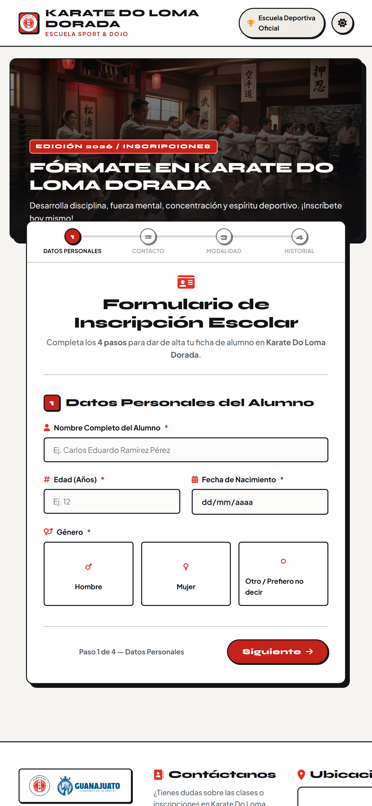
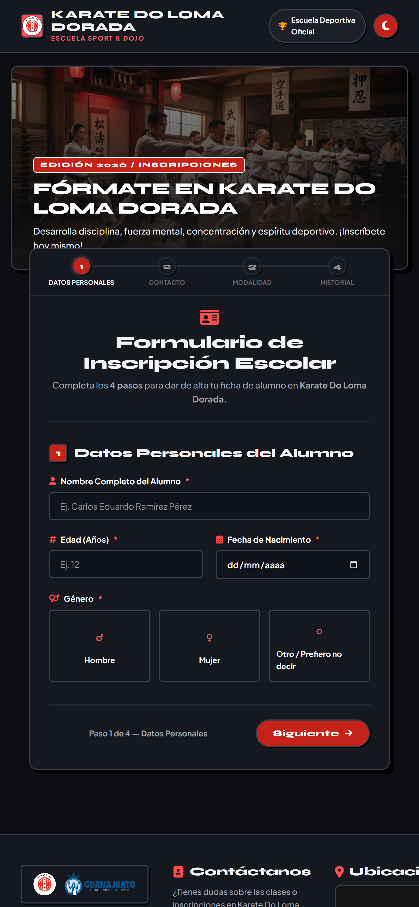
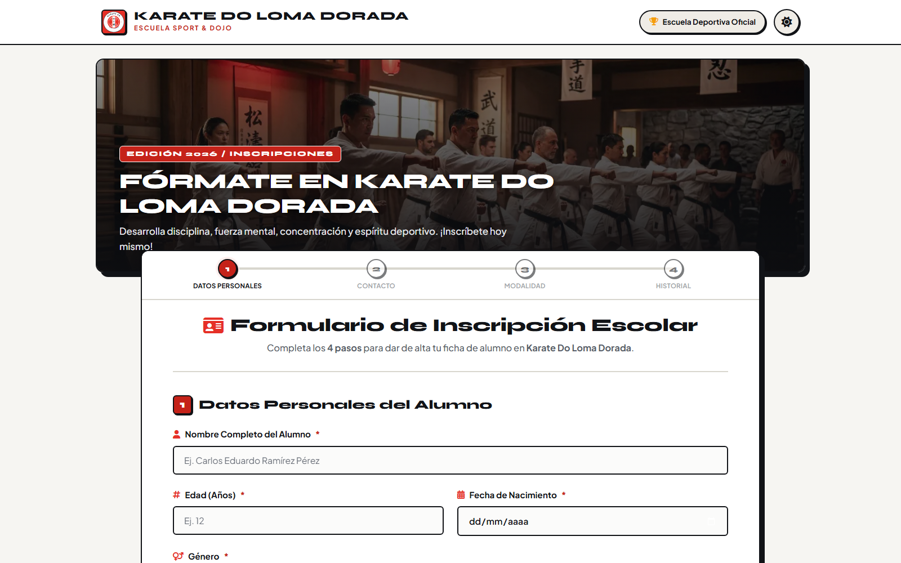
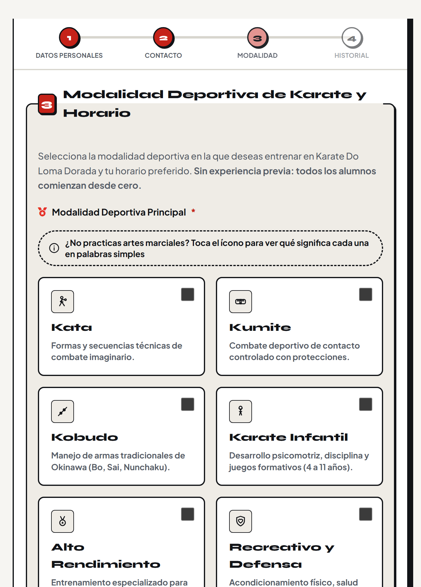
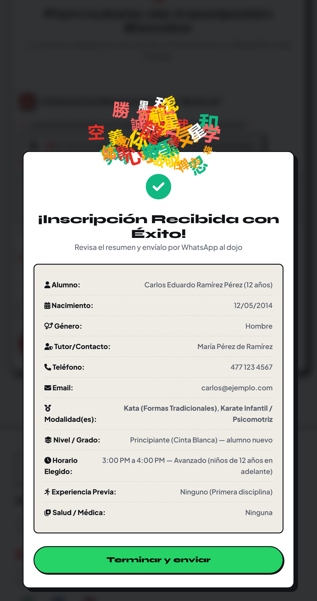

Fórmate en
Karate Do Loma Dorada
Escuela de karate-deporte en Loma Dorada, León, Guanajuato. Un sitio móvil que forma en disciplina, fuerza mental, concentración y espíritu deportivo, y que convierte las inscripciones en un formulario de 4 pasos que llega al dojo por WhatsApp.
Responsivo: de 320 px a escritorio
CSS Grid y Flexbox reorganizan el hero, el stepper y las tarjetas de modalidad. Inputs a 16 px (sin zoom en iOS) y cero scroll horizontal.
Modo claro y oscuro persistente
Un solo ícono en el header alterna el tema, se guarda en el dispositivo (localStorage) y respeta la preferencia del sistema.
Carga instantánea y accesible
HTML, CSS y JavaScript puros (sin frameworks), hero optimizado a WebP y accesibilidad WCAG 2.1 AA validada con 73 pruebas automáticas.


Publicación llave en mano
Sitio estático con HTTPS en GitHub Pages: sin hosting de pago, sin mensualidades y sin mantenimiento de servidores.
SEO local y contenido compartible
Schema.org del dojo con coordenadas, portada Open Graph para que el enlace se vea bien en WhatsApp y Facebook, más robots, sitemap y llms.txt.
Sin base de datos y sin cookies
El formulario no almacena nada en servidores: compone el resumen y abre WhatsApp hacia el dojo. Privacidad por diseño y cero costos recurrentes.
El formulario es un asistente (wizard) que agenda la inscripción: valida cada dato antes de avanzar y al final entrega el resumen listo para el dojo.

Grupo principiantes · niños de 6 a 11 años
Grupo avanzado · niños de 12 años en adelante

Al enviar aparece el resumen completo y una lluvia de kanjis; el botón final abre WhatsApp con el mensaje ya redactado hacia el 477 673 7908.
¿Listo para abrir las inscripciones 2026?
Recorre la página real desde tu celular y agenda la primera inscripción de prueba en menos de 2 minutos.
© 2026 Escuela Karate Do Loma Dorada · Sitio estático HTML, CSS y JavaScript
Desliza hacia arriba para volver a la portada ↑